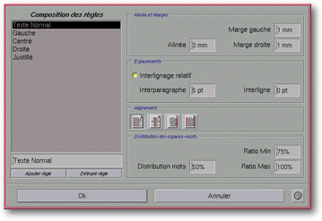

<!-- Documentation Xclamation (c)1994-2000 AXENE contact axene@axene.org>
<html>

<head>
<title>Composition des règles</title>
</head>

<body BGCOLOR="#FFFFFF" BACKGROUND="Images/back.gif" TEXT="#000000">

<p ALIGN="right">  </p>

<p><br>
<br>
Cette boîte de dialogue permet de définir les règles d'affichage des textes dans
Xclamation. Une règle désigne ici la manière d'afficher les mots dans un paragraphe.
Cette boîte permet d'associer à un nom une règle de paragraphe. Ces règles seront
appliquées dans l'<a HREF="Box_Editor.html#paragraph_list">éditeur de texte</a>. <br>
<br>
</p>

<hr>

<p align="center"><br>
<br>
<small><i>Photo d'écran&nbsp;: Boîte de composition des règles </i></small></p>

<p><br>
</p>

<hr>

<p><br>
</p>

<h3>Partie gauche de la boîte de dialogue&nbsp;:</h3>

<ul>
  <li><a NAME="paragraph_list">la <b>liste des règles</b> affiche celles déjà définies.
    Lorsque l'on sélectionne une des règles de la liste, ses caractéristiques apparaissent
    à droite. Il est possible de sélectionner plusieurs éléments dans la liste grâce à
    l'utilisation de la touche Ctrl. Il existe des règles prédéfinies dans les </a><a HREF="ConfigParagraph.html">fichiers de configuration</a>. <br>
    &nbsp;</li>
  <li><a NAME="edit_paragraph_name">le champ texte situé sous la liste permet de <b>modifier
    le nom de la règle</b> sélectionnée. </a><br>
    &nbsp;</li>
  <li><a NAME="button_new">le bouton <i>&quot;Ajouter règle&quot;</i> permet de <b>créer une
    nouvelle règle</b>. Celle-ci aura par défaut les mêmes caractéristiques que la règle
    sélectionnée et le même nom augmenté d'un numéro. </a><br>
    &nbsp;</li>
  <li><a NAME="button_del">le bouton <i>&quot;Détruire règle&quot;</i> permet de <b>détruire
    une règle</b>. Il est impossible de détruire une règle utilisée dans l'application ou
    une règle définie dans les </a><a HREF="ConfigParagraph.html">fichiers de configuration</a>
    avec le paramètre <a HREF="ConfigParagraph.html#lock">\LOCK</a>. </li>
</ul>

<p><br>
</p>

<h3>Partie droite de la boîte de dialogue&nbsp;:</h3>

<ul>
  <li><a NAME="textfield_alinea">le champ texte <i>&quot;alinéa&quot;</i> permet de <b>définir
    la taille de l'alinéa</b>. Un alinéa est l'espace laissé libre au début de la
    première ligne d'un paragraphe. La valeur de l'alinéa est exprimée en millimètres et
    doit être comprise entre -500(mm) et 500(mm). </a><br>
    &nbsp;</li>
  <li><a NAME="textfield_left_margin">le champ texte <i>&quot;marge gauche&quot;</i> permet de
    <b>définir la taille de la marge à gauche</b> du paragraphe. La valeur de la marge
    gauche est exprimée en millimètres et doit être comprise entre 0(mm) et 500(mm). </a><br>
    &nbsp;</li>
  <li><a NAME="textfield_right_margin">le champ texte <i>&quot;marge droite&quot;</i> permet
    de <b>définir la taille de la marge à droite</b> du paragraphe. La valeur de la marge
    droite est exprimée en millimètres et doit être comprise entre 0(mm) et 500(mm). </a><br>
    &nbsp;</li>
  <li><a NAME="toggle_automatic_interline">le bouton poussoir <i>&quot;interlignage
    relatif&quot;</i> permet de <b>choisir la méthode de calcul de l'interlignage</b> dans le
    paragraphe. Il y a deux modes de calcul&nbsp;: le <b>mode relatif</b> et le <b>mode absolu</b>.
    Si le mode de calcul relatif est enclenché, la valeur du champ texte <i>&quot;interlignage&quot;</i>
    correspond à la distance séparant le bas d'une ligne de texte au haut de la ligne de
    texte suivante. Si le mode de calcul relatif n'est pas utilisé, alors c'est le mode
    absolu qui le sera. Dans ce cas, la valeur de l'interlignage désigne la distance
    séparant le bas d'une ligne de texte du bas de la ligne de texte suivante. </a><br>
    &nbsp;</li>
  <li><a NAME="textfield_interparagraph">le champ texte <i>&quot;interparagraphe&quot;</i>
    permet de <b>définir la distance séparant deux paragraphes</b>. La valeur représente la
    distance en points typographiques séparant la dernière ligne d'un paragraphe de la
    première ligne du paragraphe suivant. Cette valeur doit être comprise entre 0(pt) et
    1000(pt). </a><br>
    &nbsp;</li>
  <li><a NAME="textfield_interline">le champ texte <i>&quot;interligne&quot;</i> permet de <b>définir
    la valeur de l'interlignage</b>. La valeur est exprimée en points typographiques et elle
    doit être comprise entre 0(pt) et 1000(pt). Le mode d'utilisation de cette valeur pour
    l'affichage est régie par l'état du bouton poussoir <i>&quot;interlignage relatif&quot;</i>.
    </a><br>
    &nbsp;</li>
  <li><a NAME="icons_aligment">les quatre icônes <i>&quot;alignement</i>&quot; permettent de <b>choisir
    le mode d'alignement</b> du paragraphe. Seule l'une des quatre icônes peut être
    sélectionnée à la fois. Ces icônes représentent les modes d'alignement suivant (de
    gauche à droite)&nbsp;: aligné à gauche, centré, aligné à droite et justifié. </a><br>
    &nbsp;</li>
  <li><a NAME="textfield_word_distribution">le champ texte <i>&quot;distribution mot&quot;</i>
    permet de définir une valeur exprimée en pourcentage qui va <b>agir sur la répartition
    de l'espace libre d'une ligne</b> de texte. Le pourcentage exprimé indique la proportion
    de l'espace libre qui est réparti entre les mots du texte. Le pourcentage restant est
    affecté à l'espace entre les lettres. Donc, plus la valeur est grande, plus l'espace
    entre les lettres est petit ; à l'inverse, plus la valeur est petite, plus l'espace entre
    les lettres est grand au détriment de l'espace entre les mots. L'intervalle dans lequel
    doit se trouver cette valeur est de 0(%) à 100(%). </a><br>
    &nbsp;</li>
  <li><a NAME="textfield_min_ratio">le champ texte <i>&quot;min ratio&quot;</i> permet de
    choisir le pourcentage minimum de l'espace de la ligne de texte qui doit être rempli
    avant de passer à la ligne suivante. Ce ratio concerne la façon de couper les lignes de
    texte&nbsp;: plus la valeur est petite, plus la coupure s'effectue tôt ; à l'inverse,
    plus la valeur est proche de 100, plus la coupure s'effectue tard. La valeur doit être
    comprise entre 1(%) et 100(%). </a><br>
    &nbsp;</li>
  <li><a NAME="textfield_max_ratio">le champ texte <i>&quot;max ratio&quot;</i> permet de
    choisir le pourcentage maximum de l'espace de la ligne de texte qui doit être rempli
    avant de passer à la ligne suivante. Plus ce pourcentage est grand, plus le nombre de mot
    sur une ligne peut être important grâce à la réduction de l'espace entre les lettres
    et les mots. Cette valeur doit être comprise entre 100(%) et 1000(%). </a></li>
</ul>

<p><br>
</p>

<h3>Partie inférieure de la boîte de dialogue&nbsp;:</h3>

<ul>
  <li><a NAME="button_ok"><i>&quot;Ok&quot;</i> permet d'<b>accepter toutes les modifications</b>
    apportées à la liste des règles et ferme la boîte. Tous les textes utilisant des
    règles modifiées seront mis à jour automatiquement. </a><br>
    &nbsp;</li>
  <li><a NAME="button_cancel"><i>&quot;Annuler&quot;</i> <b>annule toutes les opérations</b>
    sur la liste des règles et ferme la boîte. </a></li>
</ul>

<p><br>
</p>

<hr>

<p ALIGN="right"></p>
</body>
</html>
